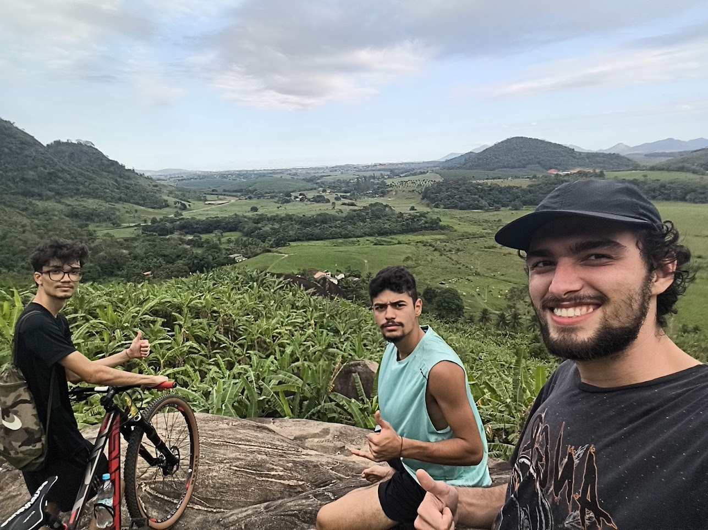
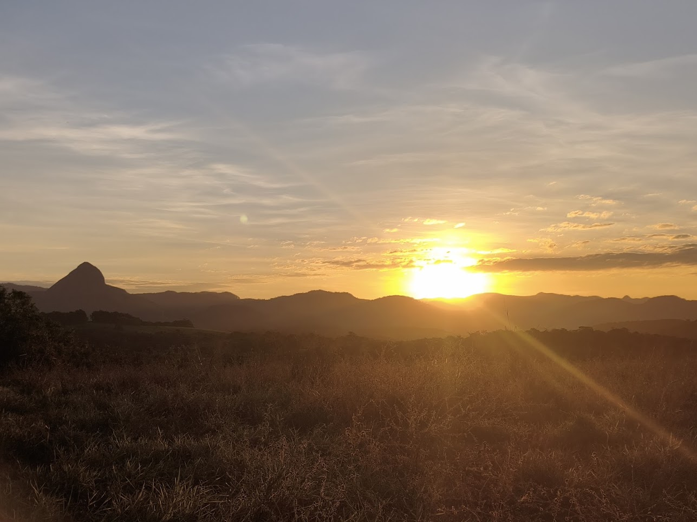
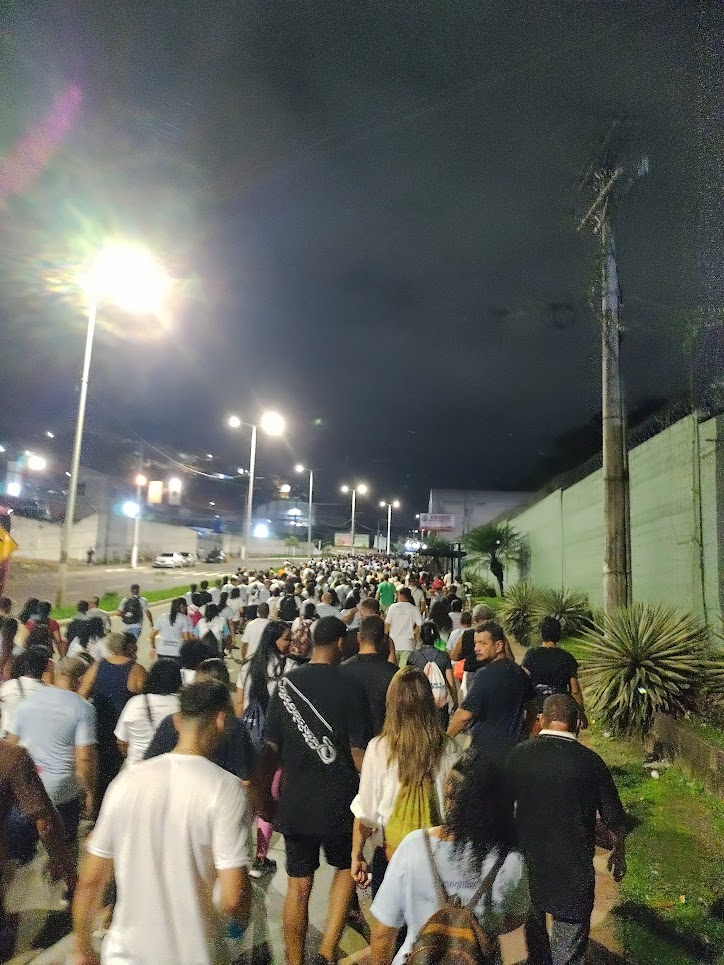

Olá, eu sou Davi Calote Pereira
Me chamo Davi tenho 21 anos e estou fazendo faculdade de Ciências da Computação na UVV, sou técnico em Elétrica pelo IFES de Vitória e tenho 2 anos de experiência trabalhando em indústria e tenho grande vontade de aprender cada vez mais sobre várias coisas.
Peça um orçamentoMinha história
Sou Davi Calote Pereira, natural de Vitória-ES mas moro em Cariacica-sede desde que me entendo por gente, tenho 21 anos faço aniversário em abril e tenho muita curiosidade de aprender.
Gosto de jogar video-game no meu tempo livre tenho uma biblioteca de jogos que ainda preciso terminar, gosto muito de andar de Bicicleta sempre que posso, estudei meu ensino médio no Maria Ortiz e não foi tão ruim, ao mesmo tempo ajudava meu pai na manutenção de eletrônicos, quando estava terminando o ensino médio iniciei um curso técnico de elétrica como concomitante no IFES de vitória, por 6 meses tive uma rotina de ter q acordar 5 horas e ir dormir la pra meia noite pois eu estudava de manhã e fazia o curso a noite, quando comecei o estágio não foi diferente até porque era de manhã, fiz estágio na ArcelorMittal Tubarão e trabalhei com manutenção elétrica de equipamentos ferroviários internos la da Arcelor.
O estágio acabou e comecei a faculdade de Ciência da Computação na UVV.
Habilidades
Técnico em Elétrica
Manutenção Elétrica
Tenho experiência de Manutenção de painéis, motores e geradores CC, motores CA, leitura de projetos elétricos.
Transição para a Tecnologia
Desde sempre gostei da parte de tecnologia e computadores no geral, quando fiz elétrica mexi um pouco com programação de C e LADDER e acabei me interessando mais, o que me fez começar a faculdade de Ciência da Computação
Ciência da Computação
Hoje, estou cursando Ciência da Computação na UVV, unindo minha base de exatas e raciocínio lógico da indústria com o desenvolvimento de software.
Hobbies, Música e vídeo
- Jogos online
- RPG de mesa
- Musica mais ouvida: Legião Urbana - Tempo Perdido
- Ler alguns livros
- Andar de Bicicleta
A música
Um vídeo
Este é um dos jogos q eu costumo jogar.



Vida Acadêmica
| Matéria | Resumo |
|---|---|
| Desenvolvimento Web | HTML, CSS e JavaScript |
| Design e Desenvolvimento de Banco de Dados I | Modelo conceitual, lógico e agora estamos indo para o físico |
| Experiência e Interface com o Usuário | Usabilidade, Heurísticas de Nielsen e projeto |
| Fundamentos de Tecnologia da Computação | Hardware, Software, Portugol. |
| Lógica para Computação | Método dedutivo |
| Textos Científicos: Aspectos Metodológicos e Linguísticos | Como fazer um texto Científico |
Planos para o futuro
Arranjar um trabalho, terminar a faculdade, comprar um carro, começar a morar sozinho